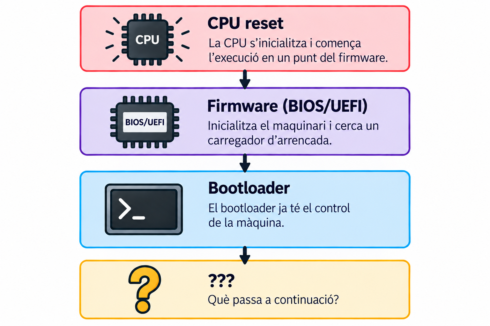
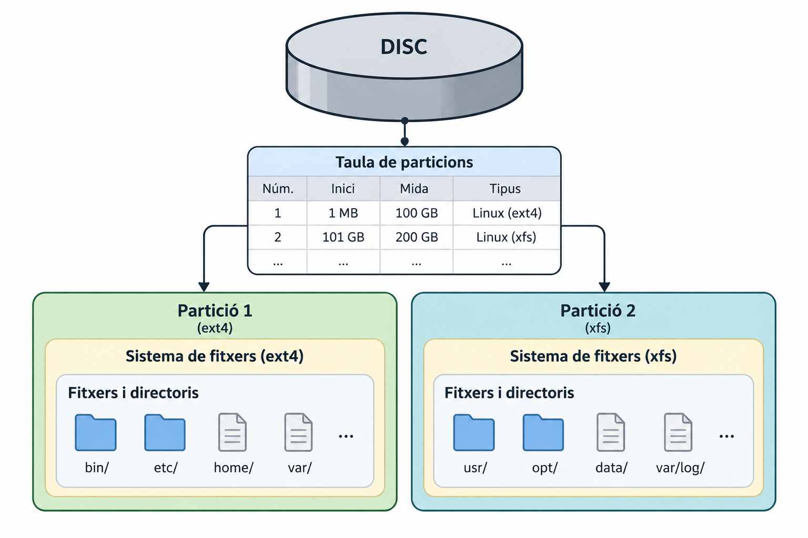
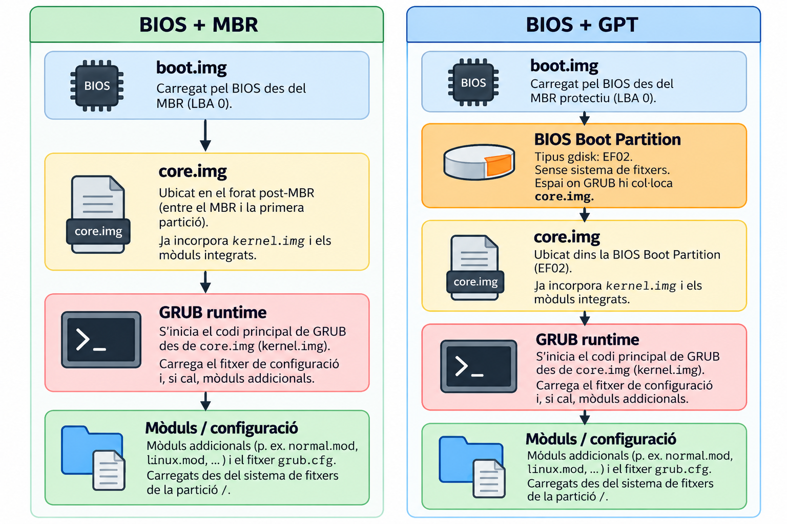
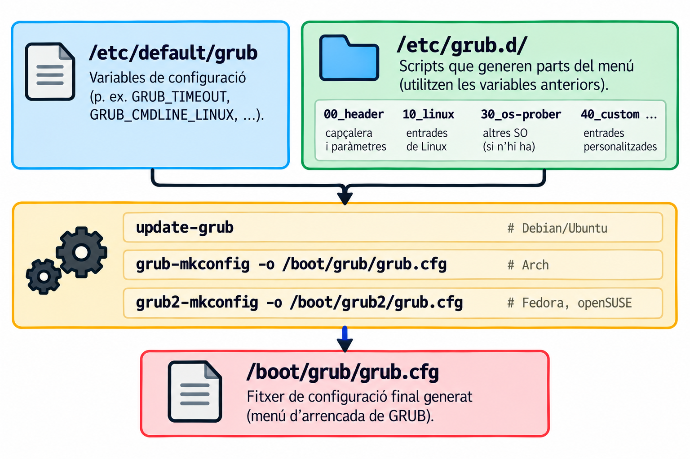
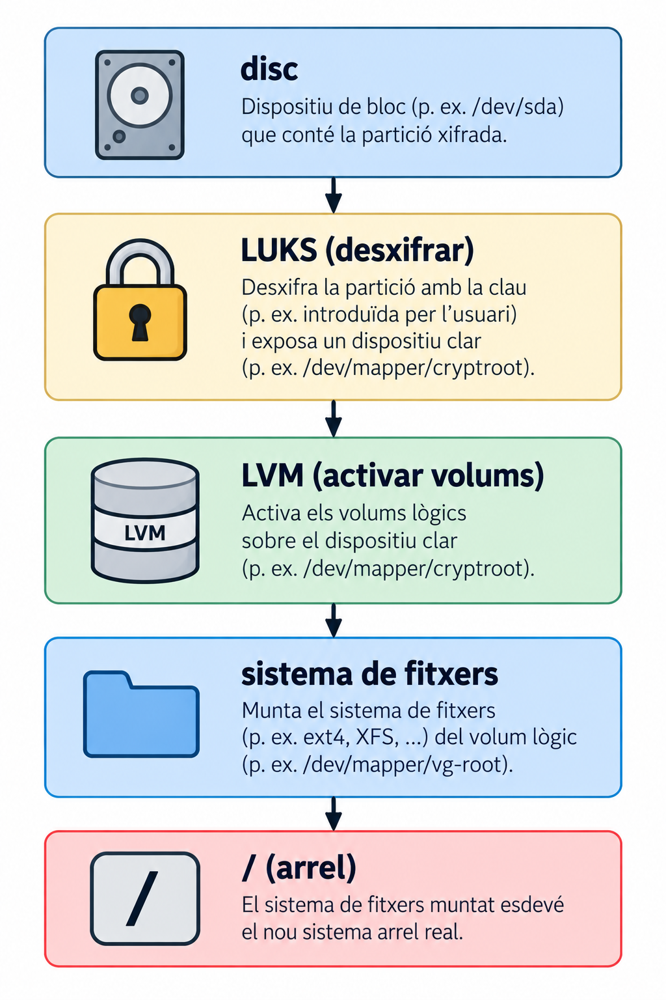
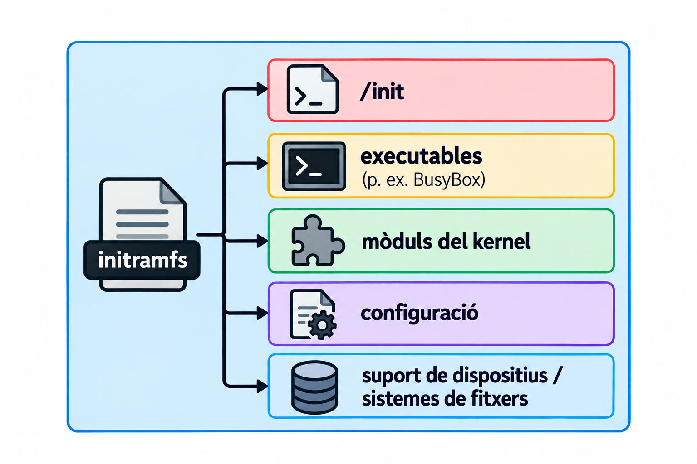

Unitat 2 · Arrencada (Part 2)
Administració i Manteniment de Sistemes i Aplicacions (AMSA)
Objectius d’aprenentatge
- Distingir MBR i GPT (esquemes de particions) de BIOS i UEFI (firmware), i situar l’ESP i la BIOS boot partition en aquest mapa.
- Explicar què fa GRUB i com el seu contracte amb el firmware no és el mateix en BIOS i en UEFI.
- Descriure com GRUB localitza i carrega el kernel i l’initramfs, i per què
vmlinuzno és un ELF genèric. - Explicar per què existeix l’initramfs i què fa entre el
/initi elswitch_root. - Situar
systemdcom a PID 1 i seguir la cadena fins allogin. - Situar un símptoma d’arrencada (
grub rescue>, kernel panic, mode d’emergència) en l’etapa correcta.
On ens vam quedar?

Què falta perquè aparegui la pantalla de login de Linux?
Un disc no és una partició

Una partició és una regió del disc, definida per la taula de particions (mida i posició). El sistema de fitxers i els fitxers que hi ha a dins són una capa diferent, per sobre.
MBR vs GPT
| MBR | GPT | |
|---|---|---|
| esquema | antic | modern |
| identificació | particions numerades | GUID |
| nombre de particions | 4 primàries, o 3 primàries + 1 estesa | limitat per la mida de la taula (habitualment 128 entrades) |
| mida màxima de disc | ~2 TiB (sectors de 512 B, LBA de 32 bits) | molt superior |
| ús amb UEFI | possible (compatibilitat) | l’habitual |
MBR/GPT són esquemes de particions. BIOS/UEFI són firmware. No són el mateix eix: hi ha BIOS+MBR, BIOS+GPT i UEFI+GPT (UEFI+MBR és rar i es desaconsella).
L’ESP i la BIOS boot partition

EF00 i EF02 són codis de tipus de partició que gdisk mostra com a dreceres per a GUID de tipus GPT. No són flags d’arrencada. En UEFI, el firmware Boot Manager utilitza les entrades de boot emmagatzemades en NVRAM per seleccionar què carregar.
| BIOS + MBR | BIOS + GPT | UEFI + GPT | |
|---|---|---|---|
on va core.img |
forat post-MBR | BIOS Boot Partition (EF02) |
— (no cal) |
| què carrega el firmware | el sector 0 | el sector 0 | una aplicació EFI com grubx64.efi de l’ESP (EF00) |
efibootmgr: qui decideix què arrenca?
BootCurrent: 0002
BootOrder: 0002,0000,0001
Boot0000* Windows Boot Manager
Boot0001* UEFI: USB
Boot0002* ubuntu HD(1,GPT,...)/File(\EFI\ubuntu\grubx64.efi)En UEFI, el firmware Boot Manager utilitza normalment les entrades de NVRAM (BootOrder/Boot####) per decidir què carregar.
BootOrderdiu en quin ordre provar les entradesBootCurrent, quina s’ha fet servir- Cada
Boot####apunta a un executable EFI concret.
En una instal·lació UEFI normal, el firmware fa servir aquestes entrades persistents de la NVRAM. Si no en queda cap d’utilitzable, existeix també un camí de fallback, com \EFI\BOOT\BOOTX64.EFI.
Què és GRUB?
Un bootloader: el programa que el firmware carrega i que, al seu torn, localitza i carrega el kernel (i l’initramfs), abans de cedir-los el control.
\[ \text{firmware} \rightarrow \text{GRUB} \rightarrow \text{kernel + initramfs} \]
El contracte BIOS + GRUB

GRUB Legacy (0.9x) parlava de Stage 1, 1.5 i 2. GRUB 2 (l’actual) parla de boot.img, core.img i mòduls. No digueu «Stage 1 = MBR» com una equivalència universal: en GPT, core.img no va al forat post-MBR, va a la BIOS Boot Partition.
El contracte UEFI + GRUB
![UEFI firmware inicialitza el maquinari i cerca una entrada a la NVRAM segons BootOrder. La NVRAM conté l'ordre de dispositius/fitxers d'arrencada, per exemple «UEFI: ubuntu» apuntant a un fitxer .efi a l'ESP. L'ESP és una partició FAT32 (gdisk EF00) amb executables UEFI com grubx64.efi. grubx64.efi és l'executable UEFI de GRUB, carregat pel firmware des de l'ESP (p. ex. \EFI\ubuntu\grubx64.efi). GRUB s'inicialitza, carrega els seus mòduls des de /boot/grub (a la partició / o /boot) i mostra el menú d'arrencada.](figures/02/grub-uefi.png)
| BIOS | UEFI |
|---|---|
boot.img |
grubx64.efi |
core.img |
(no cal) |
| GRUB (mòduls) | GRUB (mòduls) |
No hi ha boot.img ni core.img en la cadena UEFI: el firmware carrega grubx64.efi directament de l’ESP, com qualsevol aplicació EFI (exactament com el tetris.efi del Lab 2).
grub.cfg: no s’edita a mà

grub.cfg es regenera automàticament. Si l’editeu a mà, el següent update-grub (o una actualització de kernel) ho esborrarà. Els canvis van a /etc/default/grub o a /etc/grub.d/40_custom.
Una entrada real
menuentry 'Ubuntu' {
set root='hd0,gpt2'
linux /vmlinuz root=/dev/sda2 ro quiet
initrd /initrd.img
}Quines dues coses carrega GRUB abans de cedir el control?
Paràmetres del kernel més comuns
| Paràmetre | Funció |
|---|---|
root= |
partició arrel |
ro |
primer muntatge en només lectura |
rw |
primer muntatge en lectura-escriptura |
init= |
procés init alternatiu |
nomodeset |
evita el mode-setting gràfic (depuració de vídeo) |
systemd.unit= |
target inicial de systemd |
Secure Boot
Una funció del firmware UEFI que verifica la signatura digital d’un executable EFI abans d’executar-lo.
\[ \text{UEFI} \xrightarrow{\text{verificació del binari EFI}} \text{grubx64.efi / shim} \xrightarrow{\text{verificació de la signatura}} \text{següent component} \]
No és una cadena fixa UEFI verifica GRUB, i GRUB verifica tot. Sovint hi intervé un component intermedi anomenat shim, signat per una autoritat reconeguda pel firmware, que al seu torn verifica GRUB amb una clau pròpia de la distribució. Un executable EFI no signat pot ser rebutjat quan Secure Boot està activat.
Disc → LBA (Part 1) vs. sistema de fitxers → fitxer (Part 2)
Part 1
\[ \text{disc} \xrightarrow{\text{LBA}} \text{memòria} \]
Part 2
\[ \begin{array}{c} \text{sistema de fitxers}\\ \downarrow\\ \begin{gathered} \texttt{/boot/vmlinuz-...}\\ \texttt{/boot/initrd.img-...} \end{gathered}\\ \downarrow\\ \text{memòria} \end{array} \]
vmlinuz no és un ELF genèric
Executable ELF genèric
\[ \text{ELF} \xrightarrow{\text{program headers}} \text{loader} \xrightarrow{\text{entry point}} \text{execució} \]
Imatge de kernel Linux
\[ \begin{array}{c} \texttt{vmlinuz}\\[2pt] \downarrow\\[2pt] \text{x86 boot protocol}\\[2pt] \downarrow\\[2pt] \texttt{paràmetres d'arrencada}\\[2pt] \downarrow\\[2pt] \text{entrada del kernel} \end{array} \]
vmlinuz és una imatge de kernel Linux preparada per a l’arrencada, subjecta al Linux/x86 boot protocol; no s’ha de tractar simplement com un executable ELF convencional.
GRUB carrega dues coses
![GRUB carrega el kernel (vmlinuz) i la initramfs segons l'entrada seleccionada, i els passa junts com «kernel + boot parameters» (p. ex. root=UUID=... quiet splash). El Linux kernel es descomprimeix i s'inicialitza, descomprimeix i desempaqueta la initramfs com el seu propi sistema de fitxers temporal, i executa /init des d'aquest sistema de fitxers. A l'early userspace s'executa la initramfs (scripts d'initramfs o systemd) per preparar el sistema, muntar el sistema arrel real (p. ex. amb LUKS, LVM) i fer el switch_root cap a l'arrel real.](figures/02/grub-handoff.png)
El bootloader prepara la informació necessària i transfereix l’execució al kernel.
Però el kernel encara no té el seu /
Per arribar a l’espai d’usuari normal, el kernel necessita disposar d’un sistema de fitxers arrel real.
On és el disc? Quin controlador? LVM? RAID? LUKS?
El kernel necessita controladors i informació per muntar /. Però aquests controladors solen ser mòduls… que viuen a /. Com se soluciona?
Què és l’initramfs?
Un sistema de fitxers temporal, carregat a RAM, que dona al kernel un entorn mínim per preparar l’accés a l’arrel real.
Normalment és un fitxer separat a /boot (per exemple /boot/initrd.img-6.x), que GRUB carrega junt amb el kernel. Només en casos concrets (nuclis a mida, sistemes encastats) va incrustat dins del mateix binari del kernel, amb l’opció de compilació CONFIG_INITRAMFS_SOURCE.
Per què existeix?

Per arribar a / sovint calen passos que el kernel compilat per defecte no pot fer sol: desbloquejar un disc xifrat, activar volums LVM, carregar el controlador correcte. L’initramfs és l’entorn on es fan aquests passos.
Què conté l’initramfs?

És un sistema de fitxers temporal que proporciona un entorn d’early userspace per preparar i muntar el sistema arrel real.
Què fa l’initramfs?
![/init és un script (d'initramfs-tools o systemd) que s'executa dins la initramfs. Fa un seguit de tasques típiques, l'ordre de les quals depèn de la distribució: carregar mòduls (p. ex. emmagatzematge NVMe, SATA, USB), descobrir l'emmagatzematge (detectar discs i particions, p. ex. amb udev), desbloquejar dispositius amb LUKS, activar LVM/RAID, i localitzar i muntar l'arrel real en un punt temporal (p. ex. /new_root). Finalment, switch_root substitueix la initramfs pel sistema arrel real i inicia el /sbin/init del sistema.](figures/02/init-tasks.png)
switch_root
\[ \text{initramfs} \xrightarrow{\text{switch_root}} \text{sistema de fitxers arrel real} \rightarrow \text{/} \]
switch_root està dissenyat per substituir l’arrel inicial de l’initramfs per l’arrel real, un cop aquesta ja està muntada.
pivot_root ≠ switch_root
initramfs-tools vs dracut
| Debian/Ubuntu | Fedora/RHEL | |
|---|---|---|
| eina | initramfs-tools |
dracut |
| regenerar | update-initramfs -u -k <versió> |
dracut -f /boot/initramfs-<v>.img <v> |
Regenereu l’initramfs sempre que: instal·leu un kernel nou, canvieu la configuració de RAID, o modifiqueu el xifrat de disc (LUKS). Si no, l’initramfs pot no tenir el controlador o la clau que necessita l’arrencada següent.
Cas d’ús: desbloquejar el root durant l’arrencada
/sbin/init → systemd
\[ \text{/sbin/init} \xrightarrow{\text{symlink}} \text{systemd (PID 1)} \xrightarrow{\text{inicialitza targets, serveis i login}} \text{getty / display manager} \xrightarrow{\text{login}} \text{usuari} \]
systemd s’executa com a PID 1: és el primer procés de l’espai d’usuari, i tots els altres en són descendents (directes o indirectes). En el sistema Linux normal, systemd és PID 1 i actua com a pare/reparellador dels processos que queden orfes.
On s’ha trencat?
| Símptoma | Etapa probable |
|---|---|
No bootable device |
firmware / suport d’arrencada |
grub rescue> |
GRUB / sistema de fitxers / configuració |
| Kernel panic | kernel / initramfs / arrel |
Mode d’emergència (emergency.target) |
systemd / sistema de fitxers / serveis |
Tres preguntes ràpides:
- Si veieu
grub rescue>, hem arribat al kernel? No. - Si veieu un kernel panic, hem passat GRUB? Sí.
- Si arribem a
emergency.target, el firmware encara té el control? No.
El mapa complet
![Firmware inicialitza el maquinari i cerca un carregador d'arrencada. BIOS (llegat) carrega el primer sector del disc (MBR) i boot.img carrega core.img (GRUB) des del disc. UEFI (modern) llegeix l'ordre d'arrencada de la NVRAM i accedeix a l'ESP, identificada pel tipus de partició EF00; NVRAM + ESP carrega grubx64.efi des de la partició ESP (FAT32, tipus EF00). Les dues branques convergeixen a GRUB, que mostra el menú, carrega el kernel i la initramfs segons l'entrada seleccionada i passa els paràmetres. El Linux kernel descomprimeix el kernel, descomprimeix la initramfs com el seu sistema de fitxers temporal i executa /init. /init (early userspace) s'executa dins la initramfs per carregar mòduls, descobrir l'emmagatzematge, desbloquejar dispositius amb LUKS, activar LVM/RAID i muntar l'arrel real en un punt temporal. switch_root substitueix la initramfs pel sistema arrel real i inicia el /sbin/init del sistema. El sistema de fitxers del sistema ja queda muntat com a arrel. PID 1 (systemd) inicia el sistema d'inicialització, que activa els targets, inicia els serveis i activa el gestor de login.](figures/02/part2-map.png)
Cada etapa resol un problema que la següent encara no pot resoldre per si mateixa.
Resum
- MBR/GPT vs. BIOS/UEFI: esquemes de particions i firmware són dos eixos independents. L’ESP (
EF00) i la BIOS boot partition (EF02) són particions amb funcions diferents, no flags d’arrencada. - GRUB: el mateix bootloader, dos contractes diferents (
boot.img/core.imgen BIOS;grubx64.efia l’ESP en UEFI).grub.cfges genera, no s’edita. - El kernel:
vmlinuzno és un ELF genèric; segueix el seu propi Linux/x86 boot protocol. GRUB carrega kernel i initramfs abans de cedir el control. - L’initramfs: normalment un fitxer separat que dona al kernel un entorn mínim (mòduls, LUKS, LVM) per arribar a l’arrel real, amb
switch_root. - systemd: PID 1, l’arrel de tots els processos posteriors, fins al
login.